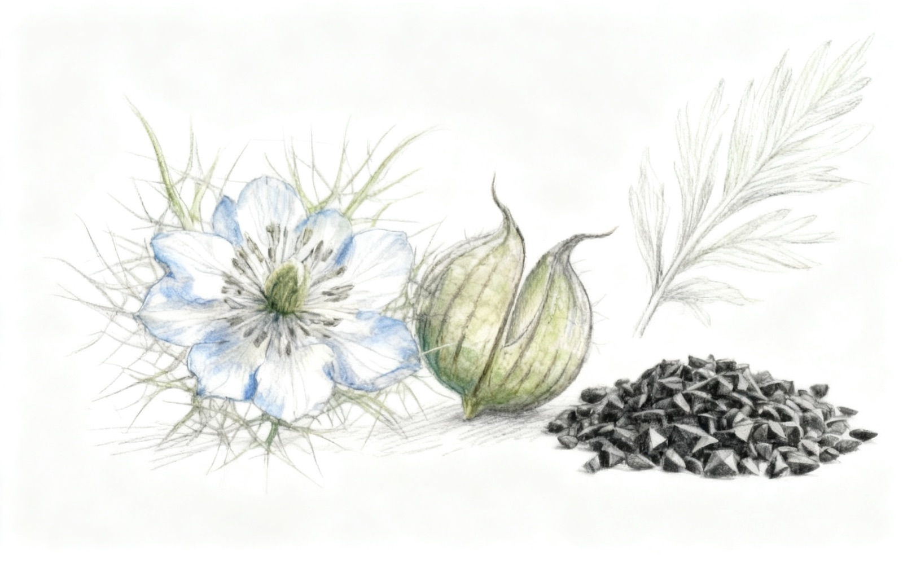

الحبة السوداء
al-habba al-sawda, "the black seed"
plant A
Nigella sativa
Also sold as black seed, black cumin, kalonji, habbat al-barakah ("seed of blessing"), fennel flower, and often wrongly as "onion seed".
- family
- Buttercup family. No relation to cumin at all.
- the seed
- Small, matte jet black, angular, about 2 to 3 mm.
- taste
- Bitter and peppery, with a hint of oregano and onion.
- grown in
- Egypt, Ethiopia, Turkey, Syria, India.
- tradition
- Prophetic medicine in the Islamic world, plus Unani, Ayurveda and Middle Eastern home remedies. Seeds were found in Tutankhamun's tomb.
- sold as
- Whole seed, cold-pressed oil, capsules, skin and hair care, seed with honey.
في الحبة السوداء شفاء من كل داء إلا السام
"In the black seed is healing for every disease except death."
what people know it for
- Overall wellbeing
- Hair and scalp
- Skin
- Digestion
- Breathing and seasonal colds
- Naan, breads, pickles
Research: the oil's main active compound is thymoquinone. Small human studies have looked at blood sugar, cholesterol, blood pressure, asthma and skin. Promising in places, nothing settled.